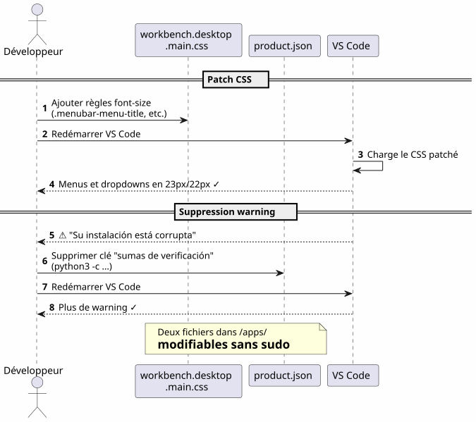

VS Code en el Home: instalación local y personalización de fuentes sin sudo
Publié le 17 April 2026
¿Por qué instalar VS Code en`/opt`o via`apt`cuando se puede colocarlo en su casa y convertir su IDE en un terreno de juego sin nunca teclear`sudo`? He aquí el relato de una instalación local seguida de una lucha acharnada para ampliar las fuentes del menú y del explorador de archivos.
- toc
-
[]
Visión general del recorrido
Failed to generate image: PlantUML preprocessing failed: [From <input> (line 6) ]
@startuml
skinparam backgroundColor #FEFEFE
skinparam componentStyle rectangle
actor Développeur as dev
actor "opencode
^^^^^
Syntax Error? (Assumed diagram type: sequence)
@startuml
skinparam backgroundColor #FEFEFE
skinparam componentStyle rectangle
actor Développeur as dev
actor "opencode
+ LLM" as agent
package "Home Usuario (~)" #LightGreen {
package "~/apps/" {
component "VS Code
(tarball)" as vscode #SkyBlue
component "vscode-update.sh" as script #LightYellow
}
package "~/.config/Code/" {
component "settings.json" as settings #Lavender
}
package "~/.vscode-custom-css/" {
component "custom.css\n(zoom: 1.25)" as customcss #Lavender
}
}
cloud "code.visualstudio.com" as download
dev --> vscode : Télécharge & installe
dev --> script : Lance mise à jour
script --> download : wget dernière version
script --> vscode : Remplace + re-patch CSS
agent --> settings : Écrit config
agent --> customcss : Écrit zoom CSS
agent --> vscode : Patch workbench CSS
note right of vscode
Installation dans le home
= contrôle total sans sudo
end note
@enduml
El Porqué: VS Code en el hogar
El problema con la instalación del sistema
VS Code instalado via`apt`, dnf`o en/opt`bloquea los archivos de la aplicación detrás de los derechos root. Cualquier modificación del CSS nativo, de`product.json`o del directorio de instalación requiere`sudo`.
Sin embargo, cuando se utilizaopencode(herramienta CLI para pilotar un LLM en su código), el agente necesita poder:
-
Escribir en los archivos de configuración`~/.config/Code/User/settings.json`) — eso, ya está en el home
-
Modificar los assets del IDE (CSS del workbench,
product.json) para las personalizaciones avanzadas — esto está bloqueado sin sudo
La solución: una instalación local
Descargamos el archivo tarball oficial y lo descomprimimos directamente en`~/apps/`:
mkdir -p ~/apps
cd ~/apps
wget "https://code.visualstudio.com/sha/download?build=stable&os=linux-x64" -O vscode.tar.gz
tar -xzf vscode.tar.gz
rm vscode.tar.gzEl binario se encuentra entonces en`~/apps/VSCode-linux-x64/bin/code`. Ninguno`sudo`no es necesario para leer, modificar o reemplazar cualquier archivo bajo`~/apps/VSCode-linux-x64/`.
Ventajas concretas
Failed to generate image: PlantUML preprocessing failed: [From <input> (line 12) ]
@startuml
skinparam backgroundColor #FEFEFE
rectangle "Instalación del Sistema\n(/opt, apt, dnf)" #LightCoral {
card "VS Code propiedad de root" {
[CSS du workbench : sudo requis]
[product.json : sudo requis]
[Dossier d'install : non modifiable]
}
}
rectangle "Instalación Home
^^^^^
Syntax Error? (Assumed diagram type: component)
@startuml
skinparam backgroundColor #FEFEFE
rectangle "Instalación del Sistema\n(/opt, apt, dnf)" #LightCoral {
card "VS Code propiedad de root" {
[CSS du workbench : sudo requis]
[product.json : sudo requis]
[Dossier d'install : non modifiable]
}
}
rectangle "Instalación Home
(~/apps)" #LightGreen {
card "VS Code propiedad del usuario" {
[CSS du workbench : libre]
[product.json : libre]
[Dossier d'install : libre]
[Script update maison]
}
}
"Instalación del Sistema\n(/opt, apt, dnf)" -right-> "Instalación Home
(~/apps)" : **Non, merci**\nJe prends le home
note bottom of "Instalación Home
(~/apps)"
L'agent opencode+LLM peut
modifier les fichiers de l'IDE
sans aucune élévation de privilèges
end note
@enduml
| Ventaja | Detalle |
|---|---|
Sin sudo |
Todos los archivos del IDE pertenecen al usuario |
Modificación directa del CSS |
Se puede parchear`workbench.desktop.main.css`sin elevación de privilegios |
Script de actualización casera |
Un simple script shell descarga, reemplaza y repacha automáticamente |
Aislamiento |
La instalación del sistema no está contaminada; rollback = eliminar la carpeta |
Personalizar la fuente del menú principal
La constatación
La fuente predeterminada del menú principal (Archivo, Editar, Ver…) y de los menús desplegables es demasiado pequeña. VS Code no ofrece ninguna opción para cambiarla.
La técnica : parche CSS directo
Se añade CSS al final del archivo`workbench.desktop.main.css`:

CSS_FILE="$HOME/apps/VSCode-linux-x64/resources/app/out/vs/workbench/workbench.desktop.main.css"
cat >> "$CSS_FILE" << 'EOF'
.menubar-menu-title{font-size:23px!important}
.menubar>.menubar-menu-button{font-size:23px!important}
.monaco-menu-option{font-size:22px!important;line-height:34px!important}
.monaco-menu .action-label:not(.codicon){font-size:22px!important}
.menubar-menu-items-holder .monaco-menu .action-item .action-label{font-size:22px!important}
EOFEliminar la advertencia de integridad
VS Code detecta los cambios en sus archivos y muestra un banner "Your installation is corrupt". Para evitarlo, se eliminan los checksums de`product.json`:
import json
product_json = "$HOME/apps/VSCode-linux-x64/resources/app/product.json"
with open(product_json, 'r') as f:
data = json.load(f)
data.pop('checksums', None)
with open(product_json, 'w') as f:
json.dump(data, f, indent=2)Tras el reinicio, no hay más advertencias y los menús son finalmente legibles.
Personalizar la fuente del panel Explorador — el combate
Intento 1 : un parámetro que no existe
Primero intentamos el parámetro nativo`workbench.tree.fontSize`en`settings.json`:
{
"workbench.tree.fontSize": 20
}Resultado:ningún efectoEste ajuste no existe en VS Code. La prueba de que los parámetros no reconocidos se ignoran silenciosamente.
Intento 2: la extensión Custom CSS and JS Loader
Se instala la extensión`be5invis.vscode-custom-css`:
~/apps/VSCode-linux-x64/bin/code --install-extension be5invis.vscode-custom-cssSe crea un archivo CSS en`~/.vscode-custom-css/custom.css`con selectores que se dirigen a los elementos del explorador :
.monaco-tree-rows .monaco-tree-row,
.sidebar .monaco-list-row,
.explorer-viewlet .monaco-list-row,
.monaco-list-row .monaco-icon-label {
font-size: 22px !important;
line-height: 36px !important;
}Y se referencia este archivo en los ajustes:
{
"vscode_custom_css.imports": [
"file:///home/user/.vscode-custom-css/custom.css"
]
}Resultado :los cambios no se aplican.
La trampa: hay que activar la extensión cada vez
La documentación de la extensión es discreta en este punto crucial: después de cada modificación del CSS personalizado, hay queimperativamenteejecutar el comando desde la paleta:
-
Ctrl+Shift+P→ teclearHabilitar CSS y JS personalizados -
VS Code solicita un reinicio → aceptar
Sin este paso, el CSS nunca se inyecta en el IDE.
Intento 3: las líneas se superponen
Incluso con`font-size: 22px` et line-height: 36px, las letras con descendente (g, p, f, b) sobresalen de las líneas vecinas. Se intenta añadir`height` et min-height:
.monaco-list-row {
height: 36px !important;
min-height: 36px !important;
}Resultado:ningún cambio. VS Code calcula las alturas de líneas en JavaScript y anula los valores CSS.
La solución: zoom sobre el contenedor padre
Failed to generate image: PlantUML preprocessing failed: [From <input> (line 5) ]
@startuml
skinparam backgroundColor #FEFEFE
rectangle "Intento 1
Parámetro inexistente" #LightCoral {
^^^^^
Syntax Error? (Assumed diagram type: activity)
@startuml
skinparam backgroundColor #FEFEFE
rectangle "Intento 1
Parámetro inexistente" #LightCoral {
card "workbench.tree.fontSize" as t1 {
[VS Code ignore le paramètre]
}
}
rectangle "Intento 2
CSS personalizado + tamaño de fuente" #LightYellow {
card ".monaco-list-row { font-size: 22px }" as t2 {
[Texte plus grand\nmais lignes superposées]
}
}
rectangle "Intento 3
font-size + line-height + height" #LightYellow {
card "height: 36px !important" as t3 {
[VS Code override\npar JavaScript]
[Aucun effet]
}
}
rectangle "Solution
zoom en el contenedor padre" #LightGreen {
card ".monaco-list-rows { zoom: 1.25 }" as t4 {
[Texte + espacement\nproportionnels]
[Layout JS respecté]
[✓ Résultat conforme]
}
}
t1 -down-> t2 : Pas de paramètre ?\nOn essaie le CSS
t2 -down-> t3 : Lignes superposées ?\nOn force la hauteur
t3 -down-> t4 : Override JS ?\nOn utilise zoom
@enduml
En lugar de luchar contra el layout JavaScript, se utiliza la propiedad`zoom`en el contenedor de las líneas :
.explorer-viewlet .monaco-list-rows,
.sidebar .monaco-list-rows {
zoom: 1.25;
}`zoom`agrandiza uniformemente la renderización del contenedor — texto y espaciado — sin romper el layout calculado por el motor JavaScript de VS Code. El factor 1.25 corresponde aproximadamente a un paso de 13px a 16px.
Resultado :los nombres de archivos son finalmente legibles, las líneas correctamente espaciadas.
Resumen de los selectores y lo que funciona
| Enfoque | CSS | Resultado |
|---|---|---|
|
|
Texto más grande pero líneas superpuestas |
|
|
Sin efecto (override JS) |
|
|
Exitoso — texto + espaciado proporcional |
El script de actualización automática
Failed to generate image: PlantUML preprocessing failed: [From <input> (line 27) ]
@startuml
skinparam backgroundColor #FEFEFE
autonumber
actor "Desarrollador\no cron" as dev
participant "vscode-update.sh" as script
participant "vscode tarball\n(code.visualstudio.com)" as remote
participant "~/apps/\nVSCode-linux-x64/" as local
participant "~/apps/\nvscode-backup" as backup
participant "workbench\n.desktop.main.css" as css
participant "product.json" as product
dev -> script : ./vscode-update.sh
script -> local : Lire version courante
script -> remote : wget dernière version
script -> script : Comparer versions
alt Version identique
script --> dev : "¡Ya está actualizado!"
else Nouvelle version
script -> backup : Sauvegarder installation courante\n(horodatée)
script -> local : rm -rf ancienne installation
script -> local : mv nouvelle installation
script -> css : Ajouter patch CSS\n(menubar 23px, dropdown 22px)
script -> product : Supprimer checksums\n(python3)
script --> dev : "Actualización completa
1.xx.yy → 1.zz.ww"
^^^^^
Syntax Error? (Assumed diagram type: sequence)
@startuml
skinparam backgroundColor #FEFEFE
autonumber
actor "Desarrollador\no cron" as dev
participant "vscode-update.sh" as script
participant "vscode tarball\n(code.visualstudio.com)" as remote
participant "~/apps/\nVSCode-linux-x64/" as local
participant "~/apps/\nvscode-backup" as backup
participant "workbench\n.desktop.main.css" as css
participant "product.json" as product
dev -> script : ./vscode-update.sh
script -> local : Lire version courante
script -> remote : wget dernière version
script -> script : Comparer versions
alt Version identique
script --> dev : "¡Ya está actualizado!"
else Nouvelle version
script -> backup : Sauvegarder installation courante\n(horodatée)
script -> local : rm -rf ancienne installation
script -> local : mv nouvelle installation
script -> css : Ajouter patch CSS\n(menubar 23px, dropdown 22px)
script -> product : Supprimer checksums\n(python3)
script --> dev : "Actualización completa
1.xx.yy → 1.zz.ww"
end note
@enduml
El problema
Cuando VS Code se actualiza, reemplaza la carpeta de instalación yelimina todos los parches CSS. Hay que volver a aplicar los cambios manualmente cada vez.
El script `vscode-update.sh
Se crea`~/apps/vscode-update.sh`:
#!/bin/bash
set -e
VSCODE_DIR="$HOME/apps/VSCode-linux-x64"
BACKUP_DIR="$HOME/apps/vscode-backup"
TEMP_DIR="/tmp/vscode-update"
MENUBAR_FONT_SIZE="23px"
DROPDOWN_FONT_SIZE="22px"
echo "=== VS Code Local Updater ==="
CURRENT_VERSION=$("$VSCODE_DIR/bin/code" --version 2>/dev/null | head -1)
echo "Current version: $CURRENT_VERSION"
echo "Downloading latest VS Code..."
mkdir -p "$TEMP_DIR"
wget -q "https://code.visualstudio.com/sha/download?build=stable&os=linux-x64" \
-O "$TEMP_DIR/vscode.tar.gz"
echo "Extracting..."
mkdir -p "$TEMP_DIR/extracted"
tar -xzf "$TEMP_DIR/vscode.tar.gz" -C "$TEMP_DIR/extracted"
NEW_VERSION=$("$TEMP_DIR/extracted/VSCode-linux-x64/bin/code" \
--version 2>/dev/null | head -1)
echo "New version: $NEW_VERSION"
if [ "$CURRENT_VERSION" = "$NEW_VERSION" ]; then
echo "Already up to date!"
rm -rf "$TEMP_DIR"
exit 0
fi
echo "Backing up current installation..."
mkdir -p "$BACKUP_DIR"
cp -r "$VSCODE_DIR" "$BACKUP_DIR/VSCode-linux-x64-$(date +%Y%m%d-%H%M%S)"
echo "Updating..."
rm -rf "$VSCODE_DIR"
mv "$TEMP_DIR/extracted/VSCode-linux-x64" "$VSCODE_DIR"
rm -rf "$TEMP_DIR"
CSS_FILE="$VSCODE_DIR/resources/app/out/vs/workbench/workbench.desktop.main.css"
echo "Re-applying custom CSS patch \
(menubar=${MENUBAR_FONT_SIZE}, dropdown=${DROPDOWN_FONT_SIZE})..."
cat >> "$CSS_FILE" << CSSEOF
.menubar-menu-title{font-size:${MENUBAR_FONT_SIZE}!important}\
.menubar>.menubar-menu-button{font-size:${MENUBAR_FONT_SIZE}!important}\
.monaco-menu-option{font-size:${DROPDOWN_FONT_SIZE}!important;\
line-height:34px!important}\
.monaco-menu .action-label:not(.codicon)\
{font-size:${DROPDOWN_FONT_SIZE}!important}\
.menubar-menu-items-holder .monaco-menu .action-item .action-label\
{font-size:${DROPDOWN_FONT_SIZE}!important}
CSSEOF
PRODUCT_JSON="$VSCODE_DIR/resources/app/product.json"
if [ -f "$PRODUCT_JSON" ]; then
echo "Removing checksums to prevent integrity warning..."
python3 -c "
import json
with open('$PRODUCT_JSON','r') as f: data=json.load(f)
data.pop('checksums', None)
with open('$PRODUCT_JSON','w') as f: json.dump(data,f,indent=2)
print('Done.')
"
fi
echo "=== Update complete: $CURRENT_VERSION -> $NEW_VERSION ==="El script:
-
Descarga la última versión estable
-
Comprueba si la versión difiere de la actual
-
Guardar la instalación actual (con marca de tiempo) en`~/apps/vscode-backup/`
-
Reemplace la carpeta de instalación
-
Vuelva a aplicarel parche CSS del menú principal
-
Elimina los checksums de `product.json`para evitar la advertencia de integridad
NOTA: Las personalizaciones del panel Explorer a través de la extensión Custom CSS y el archivo`~/.vscode-custom-css/custom.css`sobreviven a las actualizaciones porque viven fuera del directorio de instalación.
Archivos involucrados — visión general
Failed to generate image: PlantUML preprocessing failed: [From <input> (line 6) ]
@startuml
skinparam backgroundColor #FEFEFE
skinparam componentStyle rectangle
rectangle "Instalación VS Code
(~/apps/VSCode-linux-x64/)" #LightCoral {
^^^^^
Syntax Error? (Assumed diagram type: activity)
@startuml
skinparam backgroundColor #FEFEFE
skinparam componentStyle rectangle
rectangle "Instalación VS Code
(~/apps/VSCode-linux-x64/)" #LightCoral {
component "workbench.desktop\n.main.css" as css #LightCoral
component "product.json" as product #LightCoral
component "binario
bin/code" as binary #LightCoral
}
rectangle "Configuración de usuario
(~/.config/Code/)" #LightGreen {
component "settings.json" as settings #LightGreen
component "extensiones/" as extensions #LightGreen
}
rectangle "Customisation persistente\n(~/.vscode-custom-css/)" #SkyBlue {
component "custom.css
(zoom: 1.25)" as customcss #SkyBlue
}
rectangle "Automatización
(~/apps/)" #LightYellow {
component "vscode-update.sh" as script #LightYellow
component "vscode-backup/" as backup #LightYellow
}
script ..> css : Re-patch après MAJ
script ..> product : Supprime checksums\naprès MAJ
settings --> customcss : Référence via\nvscode_custom_css.imports
extensions ..> css : Custom CSS Loader\ninjecte custom.css
note bottom of css
**Ne survit pas** aux mises à jour
Re-patché par le script
end note
note bottom of customcss
**Survit** aux mises à jour
Vit hors du dossier d'installation
end note
note bottom of settings
**Survit** aux mises à jour
Vit dans ~/.config/
end note
@enduml
| camino | Rol | ¿Sobrevive a las actualizaciones? |
|---|---|---|
|
Instalación del IDE |
No (reemplazada) |
|
CSS del área de trabajo (menú, listas desplegables) |
No (reparcheado por el script) |
|
Sumas de verificación de integridad |
No (re-limpieza por el script) |
|
Script de actualización automática |
Sí |
|
Parámetros de usuario (fontSize, custom CSS) |
Sí |
|
CSS personalizado para el Explorer (zoom) |
Sí |
Lecciones aprendidas
Failed to generate image: PlantUML preprocessing failed: [From <input> (line 7) ]
@startuml
skinparam backgroundColor #FEFEFE
skinparam defaultFontName sans-serif
skinparam ArrowColor #444444
rectangle "Instalación local
en el home" as install #LightGreen {
^^^^^
Syntax Error? (Assumed diagram type: activity)
@startuml
skinparam backgroundColor #FEFEFE
skinparam defaultFontName sans-serif
skinparam ArrowColor #444444
rectangle "Instalación local
en el home" as install #LightGreen {
card "No sudo\n modificar CSS/config" as i1
card "opencode+LLM puede\n modificar todo" as i2
card "Rollback = restaurar\n el backup marcado de tiempo" as i3
}
rectangle "**Personalización CSS**
zoom vs tamaño de fuente" as css #LightYellow {
card "zoom > tamaño de fuente
para la lista de componentes" as c1
card "Layout JS override
height/line-height" as c2
card "Extension Custom CSS
requiere activación
manual (Ctrl+Shift+P)" as c3
}
rectangle "**Automatización**\n script de actualización" as auto #LightCoral {
card "Re-patch CSS después
cada actualización" as a1
card "Eliminar checksums
product.json" as a2
card "Copia de seguridad timestampada\n antes del reemplazo" as a3
}
install -right-> css : ensuite
css -right-> auto : enfin
note top of install
Contrôle total sans élévation
de privilèges
end note
note top of auto
Sans script, chaque MAJ
efface les patches CSS
end note
@enduml
Instalar en el home libera todo
Una instalación local en`~/apps`da un control total sobre VS Code :
-
No`sudo`para modificar el CSS o la configuración
-
El agente opencode+LLM puede escribir en los archivos de configuración y los assets del IDE
-
Rollback trivial: restaurar la copia de seguridad con marca de tiempo
zoom` > font-size para los componentes de lista
VS Code controla la altura de las líneas mediante JavaScript. Modificar`font-size`No poder tocar la altura asignada por el motor de layout da textos que se desbordan. La propiedad`zoom`sobre el contenedor padre agranda todo proporcionalmente y evita este problema.
La extensión Custom CSS requiere una activación explícita
No es un parámetro 'set and forget'. Cada modificación del archivo CSS custom requiere volver a ejecutar 'Enable Custom CSS and JS' desde la paleta de comandos`Ctrl+Shift+P`)
Un script de actualización es indispensable.
Sin script, cada actualización de VS Code elimina los parches CSS del workbench. El script`vscode-update.sh`automatiza la descarga, el reemplazo, el re-patch y la limpieza de los checksums.
Referencias rápidas
-
Descarga VS Code : https://code.visualstudio.com/Download
-
Extensión Cargador de CSS y JS personalizado :`be5invis.vscode-custom-css`
-
Issue VS Code solicitando un parámetro nativo para la fuente del Explorer:https://github.com/microsoft/vscode/issues/149[github.com/microsoft/vscode#149]